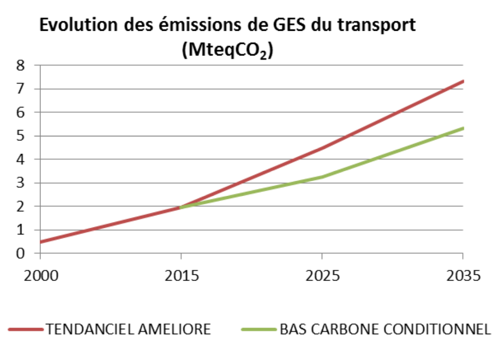

The 21st Conference of the Parties (COP21) to the United Nations Framework Convention on Climate Change (UNFCCC) will be held in Paris in December 2015. One of the main objectives of this conference is to reach a legal agreement Binding limit applicable to all States Parties, in order to limit the increase in global temperature to below 2 ° C. Each State Party is thus called upon to contribute to the development of the new agreement by defining and adapting the contributions it can make to tackle climate change in the form of a Determined National Contribution (CPDN). For example, the Congo has been working to develop its national contribution, with a view to forwarding it to the UNFCCC secretariat before 1 October, in view of COP21.
It should be recalled, however, that the country's greenhouse gas (GHG) emissions level remains at a very reasonable level, below the world average. However, the country's strong growth is accompanied by a significant increase in emissions. At the same time, the global phenomenon of climate change impacts very significantly the conditions of agricultural production and the balance of ecosystems.
Thanks to a policy of sustainable management of its forest resources, the Congo has retained an important forest cover (65% of the national territory), constituting a carbon sink and an inestimable reservoir of biodiversity for the whole planet. However, the country does not feel sufficiently supported by the international community in its efforts to preserve forests.
For a country like Congo, it is totally excluded to consider emissions without taking into account the overall socio-economic development of the country. It will effectively reduce the country's GHG emissions without compromising its development capacity. For example, low-carbon, low-resource alternative policies that fall within the broader green economy framework are being promoted in this INDC
The Republic of Congo is currently in a complicated situation of the cash economy type with risks of large variations in budgetary resources based on mono-oil resources. To become industrialized without endangering its natural environment, Congo needs to diversify its economy and access alternative and innovative technologies.
In addition, the agricultural sector remains underdeveloped, notwithstanding the various governmental support and initiatives in the field, thus removing the posed outlooks from food self-sufficiency. The country remains heavily dependent on imports to meet its ever-increasing food needs. This is an important source of foreign exchange spending. This sector will develop through a close partnership between transformer investors and producer cooperatives, assisted by non-governmental organizations (NGOs). This agricultural intensification, which is a source of wealth and foreign exchange for the country, is likely to provide jobs not only to rural farmers but also to urban youth. These measures will make it possible to combat poverty and food precariousness.
These development measures must be accompanied by a minimum organization and protection of the internal market, in particular for basic necessities, for example by giving priority to domestic production in relation to imported goods.
The country's considerable resources and potential in agriculture, forestry, hydroelectricity and tourism are all assets for the development and generating jobs. The means employed will determine the level of greening of development, which will nevertheless be part of a national economic development objective.
The evaluation of these means must take into account, in the first place, the actions essential to the start of a comprehensive and sustained development of the country, including good governance, simplification of administrative formalities, support for preliminary studies, promotion and The creation of infrastructure, as well as the deliberate support of public authorities and public opinion.
This is why the following work simulates the economic, social and climatic prospects of a diversified development that meets a 10% Ghana, Côte d'Ivoire, Kenya and Brazil.
Two scenarios are simulated for greenhouse gas emissions: an unconditional trend scenario including commitments already undertaken by the Republic of the Congo on greenhouse gas reduction, for which particular aid is not required and a low carbon scenario conditioned by international aid.
It should be noted that, without additional support or support for technology transfer, the Republic of Congo can only commit to emissions from the trend scenario.
The Government of the Republic of Congo has ratified the United Nations Framework Convention on Climate Change (UNFCCC), the Kyoto Protocol and other multilateral environmental agreements. In this context, it produced a National Environmental Action Plan (NEAP), which played a central role in identifying the country's vulnerability to the effects of climate change.
In addition, a National Strategy and Plan of Action for Climate Change and Variability (SNPA / CCV, 2004) have been developed. Although the country only emits about 1.1 tCO2 per capita per year, it is already suffering the effects of climate change. Vulnerability is aggravated by multiple biophysical constraints hampering development as well as weak adaptive capacities.
This contribution takes into account the existing strategies and plans of the Republic of Congo, including the National Development Plan, the Strategy Paper on Growth, Employment and Poverty Reduction, the National Strategy and Action Plan for Implementation of the United Nations Framework Convention on Climate Change and the National Strategy for Sustainable Development.
The present submission is the fulfillment of the commitment of the President of the Republic to lead his country to the emergence by 2025 through a policy of sustainable development and support to the global effort to reduce GHG emissions.
The Republic of Congo is a developing country with a population growth of 3% per year. Its economic growth (excluding petroleum sector) is estimated at 6% per year from 2010 in certain forecasts. As indicated in the Congo Vision 2025 Strategy, a 10% growth per year will be retained for this document.
Although Congo is concentrating its efforts in the energy sector, its greenhouse gas (GHG) reduction targets will be achieved through measures in all sectors of the economy, and sectoral action plans in areas such as agriculture, water, waste, forestry, energy, industry and housing. The information is summarized in the table below.
| Type of commitment conditioned by international means | Reduction from a trend development scenario |
| Perimeter | Total GHG emissions excluding carbon storage in forest biomass |
| GES | CO2, CH4, N2O (HFC, PFC, SF6 and NF3 will be covered later) |
| Reference Year | 2000 |
| Period | 2015-2025-2035 |
| Conditioned reduction level | At least 48% reduction in emissions compared to the uncontrolled (trend) development scenario in 2025 and 55% in 2035 |
| Covered sectors | Energy, including hydrocarbons Industrial Processes and Waste Management Mining and Cement Industries Agriculture and Livestock Land use, change and forest (off natural sink-restocking of forests) |
| Unconditional trend development | Projection of GHG emissions by 2025 and 2035, starting from 2000, the reference year |
| Conditional low-carbon development | Projection of GHG emissions by 2025 and 2035, starting from 2000, the baseline year on the basis of two scenarios: The trend scenario and the low-carbon conditional scenario |
| Global Warming Potential (GWP) | The PRG values used are those used by IPCC experts in accordance with UNFCCC decision CP.8 for the preparation of national emission inventories: PRG CO2 = 1 (by convention), PRG CH4 = 21 and PRG N2O = 310 |
| Methodologies for estimating emissions | The methodological approaches are based on the use of the following methods:
|
This document integrates the work of the Second National Communication to the United Nations Framework Convention on Climate Change, which is itself based on gas inventories Greenhouse gas emissions of the year 2000 and the monitoring of the country's energy information system
On the basis of the national greenhouse gas (GHG) inventory for 2000, GHG emissions, excluding forests, amount to 2 000 kteqCO2. These emissions are largely offset by the sequestration capacity of Congolese forests, estimated at 72,700 kteqCO21(natural forest sink, which will no longer be taken into account in the rest of the document). The policy for mitigating GHG emissions in the Republic of Congo has set itself the following two axes:
GHG emission reduction commitments undertaken by the Republic of the Congo are targeting GHG emissions excluding carbon storage by biomass. The Republic of Congo, like other countries in the Congo Basin, does not wish to limit its Climate policy to the simple conservation of forests using international financing mechanisms. This option would put the country under the control of external mechanisms and undermine its economic and social development because it lacks links with the real economy.
Two GHG emission scenarios were developed:
This document summarizes the assessment of these scenarios, in terms of greenhouse gas emissions, but also costs and associated co-benefits (economic development, jobs, energy security, adaptation to climate change, etc.)
The Republic of Congo's contribution is expected to reduce GHG emissions by about 48% in 2025 (8 MtCO2) in a low-carbon scenario (dependent on international support), and 54% In 2035 (ie 19 MtCO2) compared to the trend scenario.
By 2025, emissions could be multiplied by 3 in a trend scenario and increase by only 64% in a low-carbon economy.
By 2035, a trend scenario would lead to a 6-fold increase in emissions, while only a 2.7-fold increase in a low-carbon scenario.
| YEARS | EMISSIONS (without land use change) | ||||||||||
| 2000 | 2015 | 2025 TENDANCIEL | 2025 BAS CARBONE CONDITIONNEL | 2035 TENDANCIEL | 2035 BAS CARBONE CONDITIONNEL | ||||||
| TOTAL en kteqCO2 | 2044 | 5317 | 16984 | 8793 | 34527 | 15858 | |||||
| TOTAL en teqCO2/pers | 0,72 | 1,10 | 2,55 | 1,32 | 3,75 | 1,72 | |||||
Emissions (excluding land-use change), currently only 1.1 tons of CO2 per capita, would increase to 2.55 t per capita in 2025 and 3.75 tons of CO2 per capita in 2035 In the trend scenario, which is lower than the average of current global per capita emissions. In a low-carbon scenario, these emissions would increase to 1.32 tons per capita in 2025 and 1.72 in 2035, to less than 2 tons of CO2 per capita, which is the objective of convergence of emissions for the planet.
Deforestation, one of the main causes of which is the extension of agriculture, accounts for 81% of the country's emissions. Population growth will induce growing food needs, leading to the development of food crops and industrial crops, some of which could lead to an increase in deforestation, which remains low to date (net deforestation of 0.043% per year [BRLi, 2014 ]).
In relation to this evolution, the trend development scenario is based on:
It should be pointed out, however, that due to the low rate of deforestation and the high potential for natural sequestration of the country's tropical forests, it is far superior to emissions and can be further increased thanks to plantations.
In a low-carbon conditional perspective, it is proposed to:

Agriculture is very poorly developed in the Congo since only 2% of the land is used by the food sector, using very rudimentary techniques. Agro-industry is concentrated mainly on the production of sugar and maize on 312 000 ha. As a result, 80% of food products destined for urban areas are imported.
It is proposed to develop 50% of the savannahs in the framework of private agricultural cooperative partnerships for the production of foodstuffs (cassava, groundnut, sweet potato, potato, banana, plantain, yam, rice, meat, Palm, maize, etc.) but also export commodities or feed for livestock (soybeans, pellets). Sugar cane or palm oil production could also be extended for the production of ethanol or diester for agricultural and rural fuels. In the case of Congo, there is no competition between energy and food production because of the available space.
The agricultural techniques employed would be decidedly those of agro-forestry and agro-ecology, valuing pulses, producing wood energy (pellets in particular) and service, while mitigating the adverse effects of climate change, thus constituting an important co-benefit between mitigation and adaptation. Cocoa crop projects to reduce emissions from deforestation are examples to be replicated. The animal herd would be quadrupled, in the framework of sylvo-pastoral techniques, which will be an additional emission factor. New agri-food companies would partner with farmer-control farmer cooperatives (eg, Zambia, [Keith Palmer, and Patient Capital]). These associations would induce the transfer of technologies and inputs to farmers, not to mention social actions, in a spirit of respect for the soil and the biological richness of the surrounding environment (creation of micro-biological reserves). These actions would be carried out in partnership with development NGOs (IPHD type). The jobs created are estimated at 700 000 (5 ha per farmer on 66% of the developed areas), ie the projected demand for rural employment in 2035. Once self-sufficiency is achieved, export products could reach 13 million Tons, thus contributing to reducing poverty in the rural sector.
Sea and river fishing and aquaculture cover only 60% of consumption. In order to achieve self-sufficiency by 2035, catches and production would have to be increased sixfold in 2035, with a proportional impact on diesel fuel consumption. Moreover, based on the Common Agricultural Policy of the European Union, minimum protection of the internal market for essential products would be organized by introducing taxes and quotas on imports of these products.

The mining potential of the Congo is very important, especially in the iron, potash, uranium, gold and diamonds sector, and still untapped. Most of the projects would be in forest areas.
In a trend scenario, it is estimated that 70% of the energy consumed in 2025 will be generated from renewable energy sources (hydroelectricity, half of which is produced locally, without using the public grid) and 80% in 2035 Base of private investment), while adopting the most environmentally friendly extraction methods.
Cement plants use hydro-electricity as their base energy, and fuel oil for clinker furnaces.
It is proposed in the low-carbon scenario to increase the share of renewable energies to be used for the extraction of mining products to 90% by 2025 and then to 95% by 2035 (use of biomass from complementary savannah plantations Hydroelectric power).
The Republic of Congo is counting on a growth of 10% per year in the coming years2, which would correspond to an annual investment of about CFAF 5 300 billion over 2015-2025.
The private sector will participate in investments in the country under the following conditions:

The consumption of energy is dominated by more than 80% by the demand for wood-energy of the households. Given a 3% increase in the population and the attractiveness of cities, the population is expected to reach 8.5 million by 2035 and to be 83% urban, while the rural population is expected to stagnate.
In addition, food needs were estimated for these same populations in order to achieve food self-sufficiency by 2025. Energy demand levels are based on this increase as well as the achievement in 2035 of an individual consumption of 2500 kWh per year3, compared with only 150 kWh per person currently.
In terms of domestic consumption, the objective is to allow access to electricity for 75% of urban areas by 2025 and 100% by 2035, with rates of 50% and 75% respectively in rural areas.
In addition, the extension of improved charcoal fireplaces, as well as the production of improved grinding wheels by charcoal burners, should significantly reduce energy consumption.
In terms of transport, many projects are planned, whether for infrastructure projects, the development of public transport services (notably in Brazzaville and Pointe-Noire), to combat congestion or to Legislation (eg prohibition of the import of vehicles older than 5 years). In a low-carbon scenario, it is proposed to control the rise in energy consumption linked to transport to 70% of the trend scenario in 20254, with a renewable fuel option (21% to 43% of consumption).
The number of jobseekers is expected to increase from currently 800,000 to 3.7 million in 2035, ie a quadrupling. The direct employment created by the prospects of each sector studied is expected to total 1.5 million, which, together with the induced jobs, is expected to achieve full employment by 2035.

The 23% of direct emissions in 2000, the emissions associated with gas flaring associated with oil production were the subject of several measures, consistent with Congo's participation this year in the initiative Zero Flaring of Routine Here 2030 . Non-flared gas is partially recovered in two new gas-fired power stations in Djéno (50MW) and Côte Maltève (300MW). This policy, which has already entered into force, is taken into account in the trend scenario.
The Congo has a significant hydroelectric potential estimated at about 14000 MW of which only 228 MW (1.6%) is exploited. The Republic of Congo wishes to increase the share of electricity in its energy mix, with a target of approximately 4,000 GWh consumed by 2025. On this basis, Congo has developed an ambitious plan for the development of hydroelectricity, with the objective of ensuring, by 2025, Electricity to 85% of hydroelectric origin, and to 15% by the gas. Finally, the Congo is also developing a solar electrification plan for isolated villages (Congo Energy Strategy 2015-2025).

The Republic of Congo's vision for adaptation to climate change is based on the integration of this component into a coherent investment framework based on the country's development strategy rather than on isolated and isolated aid or subsidies, Unrelated to said strategy. This is the translation of the vision contained in the National Program of Development of Congo (PND 2012-2016): Accelerating the modernization of society and the industrialization of the country. The prospect is to generate increased and shared prosperity as a basis for the emergence of Congo in the global economy.
Climate change poses a threat to the Congolese society, economy and environment. Extreme weather events, sea level rise, average global temperature rise and unpredictable rainfall patterns have a significant impact on the livelihood of the population. As a result, changing climatic conditions jeopardize the achievement of medium- and long-term development goals, with extreme consequences for the most vulnerable social groups.
On the other hand, it is possible to transform the challenges of climate change into opportunities by developing integrated policies that address short-term vulnerability and long-term resilience at the same time. For the Republic of Congo, adaptation to change and climate change is the cornerstone of any sustainable development or policy.
The Republic of Congo implements a sectoral approach, adapted to the local circumstances of the territorial entities: coastal or coastal zone, cataract plateau and Niari valley, alluvial plains of the Congo River basin, urban areas. This approach concerns the most vulnerable sectors: hydrology and water resources, energy, agriculture, forestry and health.
The final objectives of the Republic of Congo in terms of adaptation to climate change, which must also be respected by the international community, are concretely translated into:
Protection of populations: through a preventive approach to risk management, particularly in the most threatened areas, which is based on an observation and research system to better understand current and future climate risks.
The coastal zone adaptation strategy contributes to this end: this strategy is achieved through measures aimed at integrated management of the coastal zone through the establishment of an appropriate legal framework, the acquisition of monitoring and finally training and information. The guidelines recommend the development of a coastal urban development plan, the promotion of income-generating activities related to marine and coastal ecosystems. To this must be added a device comprising mangrove conservation projects for the protection of the coastline, the protection of species, the establishment of specific facilities for the reception and management of waste, monitoring the nesting of turtles. and the creation of a coastal observatory and the marine environment. The city of Pointe-Noire, particularly exposed, is the subject of protection measures on the coast by physical barriers and bank rehabilitation works.
The protection of the natural heritage, biodiversity, forests and fisheries resources, through an adaptation approach anchored in the protection of ecosystems.
To date, the Congolese Government has established 17 protected areas covering an area of 4,350,418 hectares, ie 13,2% of the national territory. They will be complemented by the protected area of Ogoué Leketi
The strategy for adapting the coastal zone contributes to this end: this strategy is implemented through measures aimed at integrated management of the coastal zone by setting up an appropriate legal framework, monitoring and training and information. The guidelines advocate the implementation of a coastal urban development plan, and the promotion of income-generating activities related to marine and coastal ecosystems. To this must be added a scheme including mangrove conservation projects for coastal protection, protection of species, establishment of specific facilities for reception and management of waste, monitoring of nesting of turtles and the creation of a coastal and marine environment observatory. The city of Pointe-Noire, which is particularly exposed, is protected by coastal protection by physical barriers and bank rehabilitation works.
Protection of productive systems sensitive to climate change, such as agriculture. The Republic of Congo is committed to restoring ecosystems and enhancing their resilience, combating land and forest degradation, and preventing floods.
Protection of high-risk infrastructure systems. As water resources are one of the limiting factors in the development of agriculture in the Republic of Congo, the sector strategy calls for its integrated management, protection against pollution, training, scientific research and awareness-raising around these themes
These protection objectives required for adaptation require:
The Republic of the Congo wishes the assistance of the international community in the financing and technical assistance needed to achieve these objectives, as part of an integrated adaptation-mitigation strategy.
The funds needed to implement the low carbon scenario mainly concern renewable energy infrastructure, reforestation, improved investment conditions for a green economy, and training in good governance. To this must be added the necessary funding for adaptation to climate change.
Investments and costs would represent 3710 billion CFA francs annually from 2014 to 2025, or 5.14 billion euros. The country's self-financing could reach 20%, or 1.03 billion € (or 656 billion CFA francs). The international community would be asked for 5.14 billion euros for the period 2015-2025. The following table summarizes the cost of mitigation and adaptation measures, as well as the proposed financing modality.
FINANCING OF THE BAS-CARBON STRATEGY 2015-2025
| ACTION/INVESTMENTS | Total Annual Amounts (CFAF million) | Total Annual Amounts (Millions of €) | Annual self - financing Congo (Millions of €) | Total annual international funding (Millions of €) | Including annual grants (Millions of €) | Including loan subsidies (Millions of €) |
|---|---|---|---|---|---|---|
| Improvement of grinding wheels | 28.5 | 0.04 | 0.009 | 0.035 | 0.03 | 0.0 |
| Low-Emission Cocoa | 196 | 0.30 | 0.06 | 0.2 | 0.2 | 0.0 |
| Plantations in full savanna | 35000 | 53.35 | 10.67 | 42.7 | 42.7 | 0.0 |
| Implementation of agroforestry | 30000 | 45.73 | 9.15 | 36.6 | 36.6 | 0.0 |
| Training for farmers | 87.5 | 0.13 | 0.03 | 0.1 | 0.1 | 0.0 |
| Agro industry / biofuel | 2130 | 3.25 | 0.65 | 2.6 | 2.6 | |
| Households (Fireplaces and gas, solar, wood-fired power stations) | 100 | 0.15 | 0.03 | 0.1 | 0.1 | 0.0 |
| 2498 | 3.81 | 0.76 | 3.0 | 3.0 | 0.0 | |
| 19600 | 29.88 | 5.98 | 23.9 | 23.9 | ||
| Tramway | 12000 | 18.29 | 3.66 | 14.6 | 14.6 | |
| Mines | 2720 | 4.15 | 0.83 | 3.3 | 3.3 | |
| Other industries/Electrification | 126000 | 192.07 | 38.41 | 153.7 | 153.7 | |
| Preliminary studies | 106000 | 161.59 | 32.32 | 129.3 | 129.3 | |
| Adaptation | 30790 | 46.94 | 9.39 | 37.5 | 37.5 | 0.0 |
| Capacity building of decision makers | 3400 | 5.18 | 1.04 | 4.1 | 4.1 | 0.0 |
| Committee on Investment and Good Governance | 500 | 0.76 | 0.15 | 0.6 | 0.6 | 0.0 |
| Total | 371,050 | 566 | 113 | 453 | 125 | 327 |
For the first 5 years, these funds would be made available to the country, under the supervision of the abovementioned Committee, in the form of a START, without conditionalities and other safeguard procedures, because the investments concerned are precisely environmental and social investments.
The National Sustainable Development Strategy provides for the establishment of a National Sustainable Development (in addition to the Forest Fund), dedicated to the promotion of the green economy in all its components, economic and social in particular. The creation of this fund is to study and position itself in line with the National Climate Funds that are developing in various countries, taking into account the particularities of the Congolese strategy.
An Investment and Good Governance Committee (IGC) will be set up with the following main tasks:
This committee would be headed by a representative of the international community.
This committee would in no way be a bis government but would remain in the spirit of assistance, with strict ethics as much in financial as in the matter of communication of documents and discretion in the fields to be defined.
Second National Communication 2009↩
Congo has a GDP of US $ 14.4 billion in 2014 and a per capita GDP of US $ 3135 in 2013. Due to an increase in population of 3% per year the growth rate it is chosen at 10% per year. On the model of the breweries of Congo, it is proposed that an industrial development intervenes from the massive investments to put in place, on average of 5 300 billion CFA per year from 2025↩
Current consumption ratio of Brazil↩
PND↩